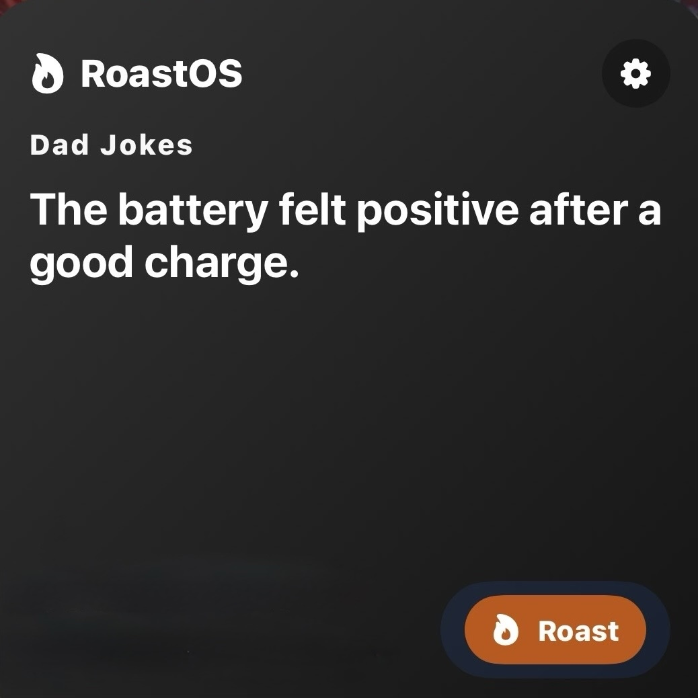

macOS
Widgets, optional notifications and a central popup when your Mac feels the need to interrupt you properly.
RoastOS turns your iPhone, iPad, Mac and Apple Watch into a source of short, dry and occasionally unnecessary observations.
Open RoastOS, tap Roast, add a widget, or let a roast arrive while you are busy doing something supposedly important.
Read it. Smirk. Roll your eyes. Share the damage if necessary. Then get back to your day.
Your Home Screen has evolved into a museum of good intentions.
Widgets, optional notifications and a central popup when your Mac feels the need to interrupt you properly.
Quick roasts, widgets, optional notifications and one more reason to look at your phone.
Same bad attitude. More screen.
A standalone roast app for your wrist. No iPhone dependency. No notification circus required.

Download a TXT pack and import it into RoastOS.
Playful observations about code, builds, bugs and tabs.
Light workplace sarcasm for meetings, email and spreadsheets.
Clean, simple jokes for the whole family.
Gentle sarcasm with the sharp edges filed down.
Short, grounded prompts for steady progress.
Quiet, reflective lines with a slightly witty turn.
...
Download TXT...
Download TXT...
Download TXT...
Download TXT...
Download TXT...
Download TXTRoastOS does not require an account, tracking or cloud processing. Its content and app state stay local. On Mac, local device context may be used to make a roast more relevant — it is not uploaded or used to build a profile.
Back to top ↑